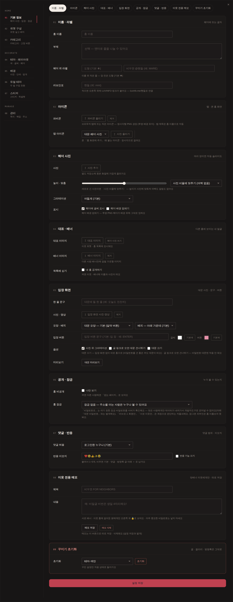
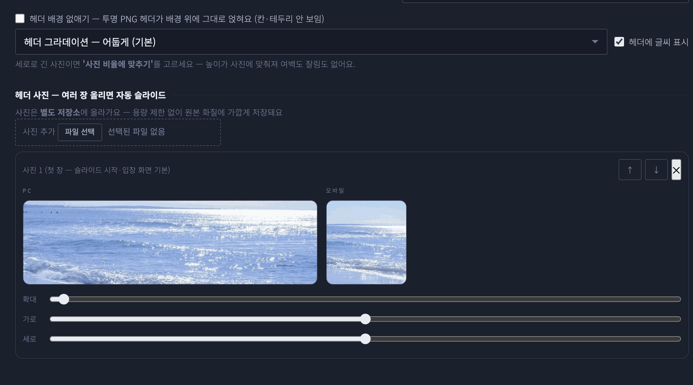
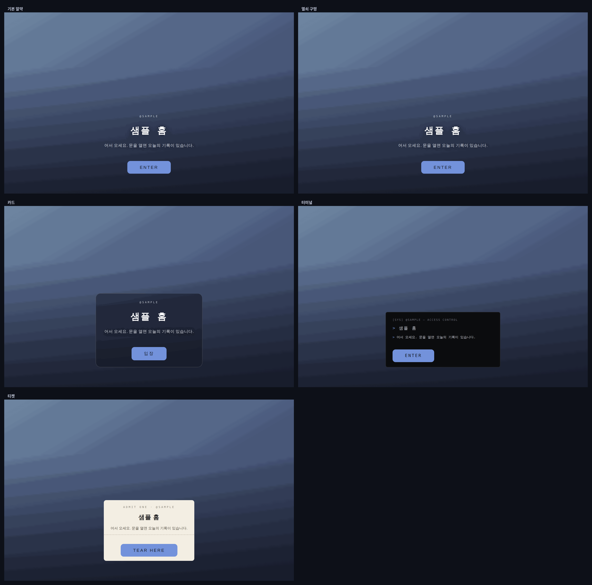

러브로그 · 꾸미기
기본 정보
꾸미기 → 기본 정보. 위쪽 탭(이름·라벨 · 아이콘 · 헤더 사진 · 대표·배너 · 입장 화면 · 공개·잠금 · 댓글·반응 · 이웃 전용 메모 · 꾸미기 초기화)을 누르면 그 섹션으로 바로 이동합니다. 마지막에 [설정 저장]을 누릅니다.

사진 자리img/ll-basic-panel.png01 이름 · 라벨
- 홈 이름 · 부제(엔터로 줄 나눔).
- 헤더 위 라벨 — 이름 위 작은 줄. 도형과 글자를 따로 적고, 비우면 ◈ @핸들.
- 러브인포 — 핸들을 적으면 오른쪽 위에 LUVINFO 링크가 붙습니다(luvinfo.me/핸들).
02 아이콘
- 파비콘 — 브라우저 탭에 뜨는 작은 아이콘. 정사각 PNG 권장(투명 배경 유지). 탭 제목은 홈 이름으로 자동.
- 앱 아이콘 — 폰 「홈 화면에 추가」 때 붙는 아이콘. 대문·헤더 사진 / 직접 올린 사진 / 기본 하트 중에서 고르고, 정사각으로 잘립니다.
03 헤더 사진
- 여러 장이면 자동 슬라이드. 크롭해서 올릴 필요 없이 사진마다 확대(100~250%)·가로·세로 슬라이더로 보여줄 부분을 정하고, PC·모바일 미리보기가 나란히 뜹니다.
- ↑↓로 순서(첫 장이 슬라이드 시작이자 입장 화면 기본).
- 높이 · 맞춤 — 세로로 긴 사진은 「사진 비율에 맞추기」를 고르면 높이가 사진에 맞춰져 여백도 잘림도 없습니다.
- 그라데이션(어둡게/밝게/없음), 헤더에 글씨 표시, 헤더 배경 없애기(투명 PNG 헤더가 배경 위에 그대로 얹힘).

사진 자리img/ll-basic-header.png04 대표 · 배너
- 대표 이미지(정사각 — 이웃 위젯·홈 목록용)와 배너 이미지(가로형 — 남의 배너칸용)를 따로 올립니다. 대표 이미지를 비우면 헤더 사진을 씁니다.
- 목록에 싣기 — 켜면 남이 나를 걸었을 때 내 이름·사진이 자동으로 뜹니다(기본 꺼짐).
05 입장 화면(대문)
- 첫 방문자에게 보이는 대문. 한 줄 문구와 사진·움짤·짧은 영상(mp4·webm, 15MB) 배경.
- 모양 · 배치 — 대문 모양 5종(기본 알약·열쇠 구멍·카드·터미널·티켓)과 배치 7곳(아래 가운데·정중앙·위·네 구석).
- 입장 버튼 — 버튼 글자 · 글씨색 · 버튼색.
- 옵션 — 사진 위 그라데이션, 🔗 글 링크로 오면 대문 건너뛰기(글 링크로 바로 들어온 방문자는 대문 없이 글부터 — 비밀번호 대문엔 적용 안 됨), 대문 끄기(입장 화면 없이 바로 홈으로 — 비밀번호를 걸어둔 홈은 켜도 대문이 뜹니다).
- [대문 미리보기]로 확인합니다(아무 데나 클릭·ESC로 나옴).

사진 자리img/ll-basic-gate.png06 공개 · 잠금
- 홈 비공개 — 「나만 보기」를 켜면 다른 사람에겐 「없는 페이지」로 보입니다.
- 🔐 홈 잠금 — 누가 홈을 열 수 있는지 정합니다.
- 잠금 없음
- 주소를 아는 사람은 누구나 봅니다.
- 러브로그 회원만
- 러브로그에 홈이 있는 계정으로 로그인해야 열립니다. 구글 로그인만 하고 홈이 없는 계정은 열 수 없습니다.
- 서로 이웃만
- 서로의 홈을 배너칸·이웃 홈에 걸어둔 홈의 주인만 열립니다.
- 비밀번호로
- 정한 잠금 비밀번호를 서버가 확인한 사람만 열립니다. 한 번 열면 정한 기간 동안 다시 묻지 않습니다.
- 대문 비밀번호만
- 대문 화면만 가리는 커튼입니다.
07 댓글 · 반응
- 💬 댓글 허용 — 로그인한 누구나 / 서로 이웃만. 읽기는 누구나 됩니다.
- 💛 반응 이모지 — 댓글·방명록의 ＋ 이모지 1~5개를 홈마다 변경(비우면 기본). 이미 쌓인 숫자는 칸 순서를 따라가니 순서 변경은 신중하게. 「반응 기능 끄기」로 아예 숨길 수도 있습니다.
08 이웃 전용 메모
- 맞배너인 분에게만 화면 오른쪽 위 🔒로 보이는 비밀 메모. 비밀글 비번 안내 등에 씁니다. 아주 중요한 비밀번호는 넣지 마세요.
- 이 메모만 섹션 안의 [메모 저장] · [메모 삭제]로 따로 저장됩니다(설정 저장과 별개).
09 꾸미기 초기화
글·갤러리·방명록은 그대로 두고, 꾸민 설정만 처음 상태로 되돌립니다. 되돌릴 범위를 고른 뒤 [초기화]. 실수했다면 관리 탭의 ⏪ 되돌리기로 복구합니다.